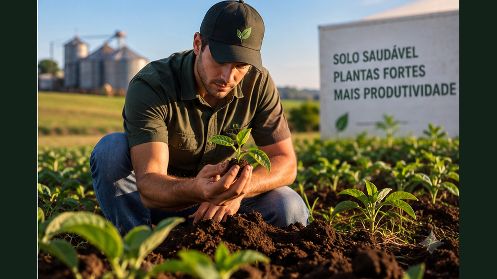

Uma geração para recuperar o Brasil: diagnóstico, espécies, viveiros, implantação, mutirões, monitoramento e organização comunitária.
6 módulos24 aulasProjeto Mutirão Refloresta
0 de 24 aulas concluídas
Plantar é o começo. Restaurar é acompanhar.
Este curso ensina a transformar vontade de reflorestar em projeto responsável. As aulas aprofundam diagnóstico, escolha de espécies, produção de mudas, implantação, manutenção, monitoramento, mobilização e caminhos profissionais ligados à restauração.
01
Por que reflorestar agora
Entenda restauração ecológica como trabalho de território, clima, água e futuro.
Aula 01
Reflorestar não é apenas plantar árvores
Reflorestamento é um processo de recuperação de cobertura vegetal, mas restauração ecológica vai além do número de mudas colocadas no chão. O objetivo é recuperar funções do ecossistema: proteger o solo, favorecer infiltração de água, criar habitat, reconectar fragmentos e permitir que processos naturais voltem a acontecer.
Uma ação pode começar com plantio, condução da regeneração natural, controle de espécies competidoras ou combinação dessas estratégias. A escolha depende do estado da área, do histórico de uso e do que ainda existe ao redor. Antes de agir, é preciso diagnosticar.
Atividade prática
Escolha uma área conhecida e descreva: o que existe hoje, o que parece degradado e o que ainda se regenera sozinho.
Aula 02
Juventude como força de restauração
Projetos ambientais precisam de continuidade, monitoramento e comunicação. Jovens podem atuar em viveiros, coleta de sementes, plantio, ciência cidadã, educação ambiental, mapeamento e mobilização comunitária. Isso transforma restauração em campo de aprendizagem e também em possibilidade profissional.
Participação real significa assumir responsabilidades concretas. Uma equipe jovem pode registrar sobrevivência das mudas, produzir mapas, organizar mutirões e contar publicamente os resultados, construindo conhecimento útil para a comunidade.
Atividade prática
Liste três funções que você assumiria em um projeto de restauração e uma habilidade que precisa desenvolver.
Aula 03
Conhecer o território antes de intervir
Solo, relevo, água, vegetação remanescente, uso atual e vizinhança determinam o que é possível fazer. Uma área próxima de mata preservada pode receber sementes naturalmente; outra, isolada e compactada, pode exigir intervenção maior.
O diagnóstico também precisa considerar pessoas. Quem usa o local? Há animais? Existe risco de fogo? Quem fará manutenção? Projetos que ignoram a dinâmica social podem perder mudas mesmo quando o desenho ecológico é bom.
Atividade prática
Faça um mapa simples com vegetação, água, caminhos, áreas expostas e usos humanos.
Aula 04
Meta ecológica e meta humana
Uma meta como “plantar mil árvores” mede esforço, não necessariamente recuperação. Indicadores melhores podem incluir sobrevivência, cobertura do solo, regenerantes naturais, diversidade e redução de erosão. Ao mesmo tempo, projetos comunitários podem medir participação, formação de jovens e continuidade das ações.
Definir resultados desejados antes do mutirão ajuda a escolher método e orçamento. Plantio é uma etapa; restauração é uma trajetória.
Atividade prática
Transforme a frase 'plantar árvores' em três metas mensuráveis para 12 meses.
Ferramenta do módulo — atualize seu Caderno Refloresta com mapa, espécies, equipe, registros e decisões.
02
Sementes, mudas e espécies
Aprenda a escolher material vegetal com função e origem adequadas.
Aula 05
Espécies nativas e contexto local
Espécies nativas pertencem à história ecológica de uma região, mas nem toda espécie nativa do Brasil pertence a qualquer local do país. Bioma, formação vegetal, altitude, solo e clima ajudam a orientar escolhas.
Listas regionais, viveiros confiáveis e assistência técnica reduzem erros. A diversidade deve representar funções e estágios de sucessão, e não apenas disponibilidade comercial.
Atividade prática
Pesquise depois cinco espécies nativas do seu município ou região e registre a fonte usada.
Aula 06
Pioneiras e espécies de crescimento rápido
Em áreas abertas, espécies que toleram sol e crescem rapidamente podem ajudar a criar sombra, biomassa e condições para outras plantas. Elas funcionam como parte da estrutura inicial do processo.
Isso não significa preencher toda a área com uma única espécie rápida. Diversidade e planejamento temporal ajudam a evitar sistemas simplificados e vulneráveis.
Atividade prática
Crie um grupo inicial com espécies de crescimento rápido e explique a função de cada uma.
Aula 07
Qualidade de sementes e mudas
Uma muda saudável precisa apresentar sistema radicular bem formado, caule compatível com seu estágio e ausência de sinais graves de pragas ou doenças. Raízes enroladas e recipientes inadequados podem comprometer estabelecimento.
Sementes também variam em viabilidade e exigências de armazenamento ou germinação. Registrar origem e lote ajuda a aprender quais materiais funcionam melhor.
Atividade prática
Monte um checklist de cinco itens para avaliar uma muda antes do plantio.
Aula 08
Viveiro como escola prática
Um pequeno viveiro ensina germinação, substrato, irrigação, identificação de espécies e planejamento. Ele também permite produzir mudas gradualmente, reduzindo dependência de compras para ações comunitárias.
Produção de mudas exige rotina. Sombreamento, água, recipientes, sanidade e rustificação antes do campo precisam ser acompanhados. O viveiro é uma infraestrutura viva.
Atividade prática
Desenhe um viveiro simples indicando água, sombra, bancadas e área de circulação.
Ferramenta do módulo — atualize seu Caderno Refloresta com mapa, espécies, equipe, registros e decisões.
03
Planejar uma área de restauração
Transforme diagnóstico em desenho, método e calendário.
Aula 09
Regeneração natural ou plantio?
Quando há sementes, raízes, brotações e fragmentos próximos, proteger e conduzir a regeneração natural pode ser eficiente. Em áreas muito degradadas, isoladas ou dominadas por fatores limitantes, o plantio pode acelerar a formação de cobertura.
Frequentemente a melhor resposta é combinar métodos. O diagnóstico deve orientar onde plantar, onde apenas proteger e onde controlar ameaças.
Atividade prática
Divida uma área imaginária em três zonas: regenerar, enriquecer e plantar.
Aula 10
Espaçamento e desenho
O espaçamento influencia quantidade de mudas, custo, fechamento da cobertura e manutenção. Não existe uma distância universal. Objetivo, espécies, método e condições locais determinam o desenho.
Linhas podem facilitar manejo, enquanto arranjos mais irregulares podem responder a microambientes. O importante é conseguir localizar, cuidar e monitorar as plantas.
Atividade prática
Desenhe duas opções de distribuição para uma área de 20 x 20 metros.
Aula 11
Preparar sem degradar mais
Controle de competição, proteção contra animais e preparo localizado podem ser necessários, mas a implantação não deve ampliar erosão ou remover regenerantes úteis. Cada intervenção precisa ter motivo claro.
Solo exposto após uma grande limpeza pode perder água e matéria orgânica rapidamente. Manter cobertura e aproveitar biomassa local, quando apropriado, ajuda a proteger o processo.
Atividade prática
Liste três intervenções necessárias e, ao lado, um risco ambiental de cada uma.
Aula 12
Calendário climático
Plantios costumam ter melhor chance quando coincidem com período favorável de chuva e temperatura, mas padrões variam regionalmente. O calendário deve considerar disponibilidade de equipe, mudas e manutenção depois do evento.
Um grande mutirão sem capacidade de cuidar das plantas nas semanas seguintes pode gerar mortalidade alta. A implantação deve caber na estrutura disponível.
Atividade prática
Monte um calendário com preparação, plantio e três momentos de manutenção.
Ferramenta do módulo — atualize seu Caderno Refloresta com mapa, espécies, equipe, registros e decisões.
04
Mutirão que funciona
Organize pessoas, ferramentas, segurança e qualidade de execução.
Aula 13
Dividir funções
Um mutirão eficiente possui recepção, orientação, distribuição de materiais, plantio, irrigação, registro e segurança. Quando todos fazem tudo ao mesmo tempo, aumenta a chance de mudas mal plantadas e dados perdidos.
Líderes de pequenos grupos conseguem demonstrar a técnica e revisar o trabalho. A experiência também se torna mais educativa para participantes iniciantes.
Atividade prática
Crie uma equipe de 12 pessoas e distribua funções.
Aula 14
Plantio correto
A cova deve permitir acomodar o torrão sem enterrar excessivamente o colo da muda. O recipiente precisa ser removido, raízes muito problemáticas avaliadas e o solo acomodado sem compactação extrema.
Depois do plantio, água e cobertura ajudam no estabelecimento. Técnicas específicas variam conforme espécie, solo e projeto; por isso a orientação local é importante.
Atividade prática
Escreva um procedimento de plantio em seis passos para entregar aos voluntários.
Aula 15
Segurança e bem-estar
Sol, ferramentas cortantes, terreno irregular, animais e esforço físico exigem planejamento. Água potável, proteção adequada, pausas, primeiros socorros e orientação sobre ferramentas devem fazer parte da organização.
Participantes precisam saber quais tarefas são adequadas à sua experiência. Produtividade nunca deve superar segurança.
Atividade prática
Monte um checklist de segurança para o dia do mutirão.
Aula 16
Registrar o que foi feito
Número de mudas, espécies, localização, participantes e condições do dia criam a linha de base para monitoramento. Fotos em pontos fixos ajudam a comparar mudanças.
Sem registro, um projeto pode repetir erros e não saber onde houve maior mortalidade. Dados simples tornam o próximo mutirão mais inteligente.
Atividade prática
Crie uma ficha com data, espécie, setor, quantidade, equipe e observações.
Ferramenta do módulo — atualize seu Caderno Refloresta com mapa, espécies, equipe, registros e decisões.
05
Cuidar depois de plantar
A restauração começa de verdade quando o evento termina.
Aula 17
Sobrevivência é indicador central
Contar mudas vivas em amostras ou em toda a área mostra se a implantação funcionou. Mortalidade precisa ser interpretada: seca, competição, animais, fogo, qualidade das mudas ou erro de plantio podem ter causas diferentes.
Replantar sem entender a causa pode repetir o problema. Monitoramento transforma perda em aprendizado.
Atividade prática
Defina como você calcularia a porcentagem de sobrevivência após 3, 6 e 12 meses.
Aula 18
Controle de competição
Mudas jovens podem sofrer com plantas muito agressivas ao redor, especialmente em áreas degradadas. O manejo deve reduzir competição sem deixar o solo desprotegido nem eliminar toda vegetação indiscriminadamente.
Coroamento, roçada seletiva e cobertura são ferramentas possíveis. Frequência depende da velocidade de crescimento local.
Atividade prática
Desenhe a área ao redor de uma muda mostrando o que proteger, manejar e manter.
Aula 19
Água, fogo e animais
Secas prolongadas, incêndios e pisoteio podem destruir rapidamente o investimento. Aceiros, proteção física, planejamento de água e diálogo com vizinhos podem fazer parte da prevenção conforme o contexto.
Cada ameaça pede uma resposta específica. Um plano de manutenção deve priorizar os riscos mais prováveis, não uma lista genérica.
Atividade prática
Classifique três ameaças locais por probabilidade e impacto.
Aula 20
Quando a natureza começa a ajudar
Com o tempo, sombra, serrapilheira, raízes e chegada espontânea de novas plantas podem reduzir algumas necessidades de manejo. O objetivo não é manter eternamente um jardim controlado, mas favorecer processos ecológicos autônomos.
Observar regenerantes naturais, aves, insetos e cobertura crescente ajuda a perceber essa transição.
Atividade prática
Escolha quatro sinais de que a área está ganhando autonomia ecológica.
Ferramenta do módulo — atualize seu Caderno Refloresta com mapa, espécies, equipe, registros e decisões.
06
Restauração, comunidade e trabalho
Conecte floresta, formação profissional e economia local.
Aula 21
Profissões da restauração
Viveiristas, coletores de sementes, técnicos, engenheiros, educadores, brigadistas, gestores, comunicadores e especialistas em geoprocessamento podem participar da cadeia da restauração. Projetos grandes dependem de competências diversas.
Para jovens, entrar nessa área pode começar por voluntariado formativo, cursos, viveiros comunitários e projetos locais, construindo portfólio de experiências reais.
Atividade prática
Escolha duas funções e liste competências técnicas e humanas exigidas.
Aula 22
Rede de sementes e viveiros
Restauração em escala exige sementes e mudas de qualidade e diversidade. Redes locais podem conectar coletores, viveiros, proprietários e projetos, fazendo recursos circularem no território.
Rastreabilidade e identificação correta são importantes. Coleta também precisa respeitar regras aplicáveis e boas práticas para não prejudicar populações naturais.
Mostrar apenas o dia do plantio esconde a maior parte do trabalho. Comunicação responsável acompanha diagnóstico, preparação, manutenção e resultados. Isso ajuda apoiadores a compreender que restaurar leva tempo.
Fotos comparáveis, mapas, indicadores e histórias de participantes podem tornar resultados visíveis sem exagerar impactos.
Atividade prática
Crie um roteiro de cinco publicações para acompanhar um projeto durante um ano.
Aula 24
Financiar e manter continuidade
Projetos podem combinar doações, parcerias, editais, apoio empresarial, poder público e geração de serviços, conforme sua estrutura. O orçamento precisa incluir manutenção e monitoramento, não apenas mudas e evento.
Transparência fortalece confiança: registrar recursos recebidos, despesas, metas e resultados facilita novas parcerias.
Atividade prática
Monte categorias de orçamento: diagnóstico, mudas, ferramentas, logística, plantio, manutenção e monitoramento.
Ferramenta do módulo — atualize seu Caderno Refloresta com mapa, espécies, equipe, registros e decisões.

Projeto final — Mutirão Refloresta: Plano de 12 Meses
Estruture uma ação de restauração executável, com diagnóstico, método, equipe, orçamento e monitoramento.